Lesson 7, 2026-10-25. 86 states at 390×844 shot before and after: 82 changed (below; numbers are the critique table's rows), 4 are identical or differ by glass-blur noise (Profile -loading, Race browse scrolled, Results list -empty, the shell). Record: concept/concept.md → Step 6.
Race browse
#2 the view in the URL and every race link carries the browse state back; #5 44pt pins; #6 no matches → Empty; #7 one Clear all filters; #23 Linear magnifier and chevron; #26 date pills in the Filters sheet.
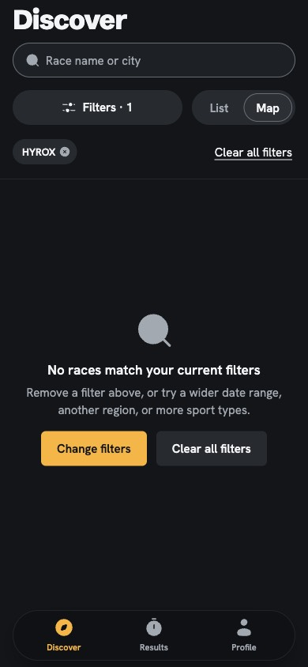
race-browse-empty-map · before
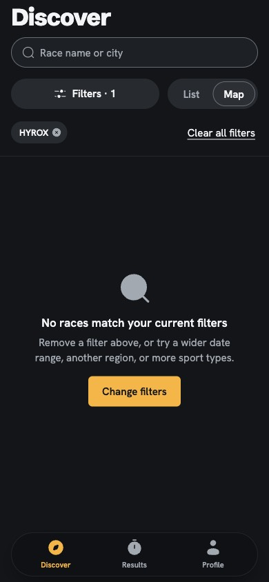
race-browse-empty-map · afterrace-browse-empty-own · before
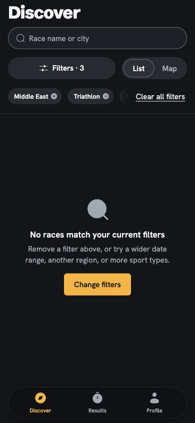
race-browse-empty-own · after
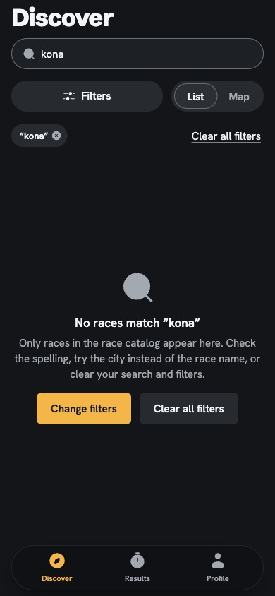
race-browse-empty-q · before
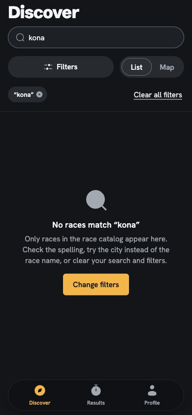
race-browse-empty-q · after
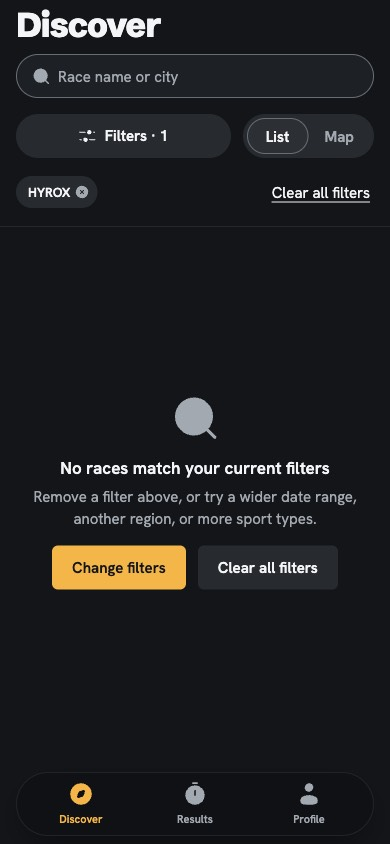
race-browse-empty · before
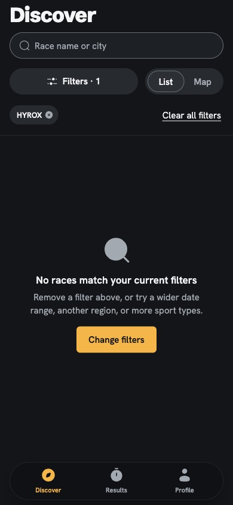
race-browse-empty · after
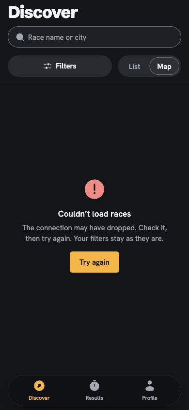
race-browse-error-map · before
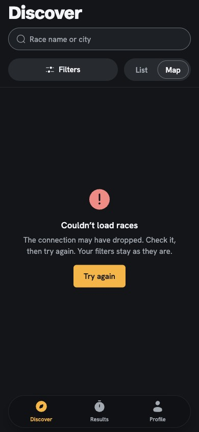
race-browse-error-map · after
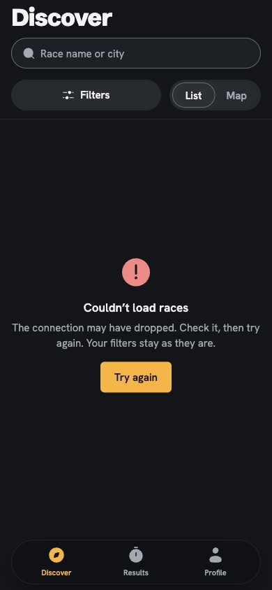
race-browse-error · before
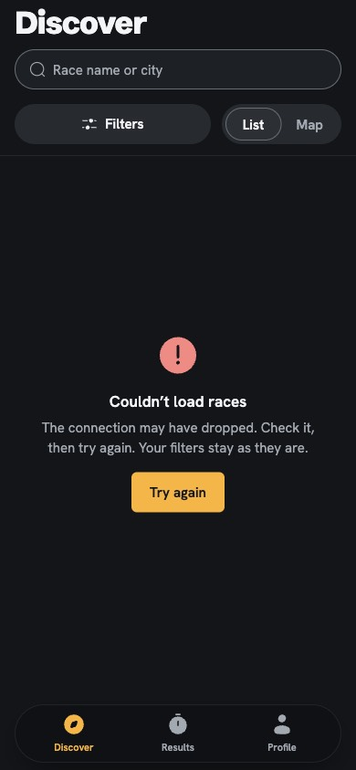
race-browse-error · after
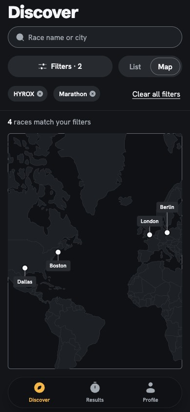
race-browse-filtered-map · beforerace-browse-filtered-map · after
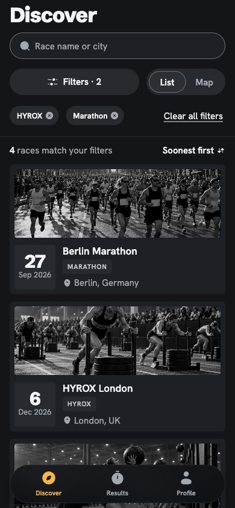
race-browse-filtered · beforerace-browse-filtered · after
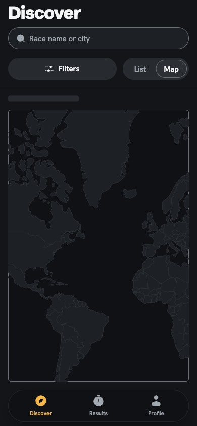
race-browse-loading-map · beforerace-browse-loading-map · afterrace-browse-loading · before
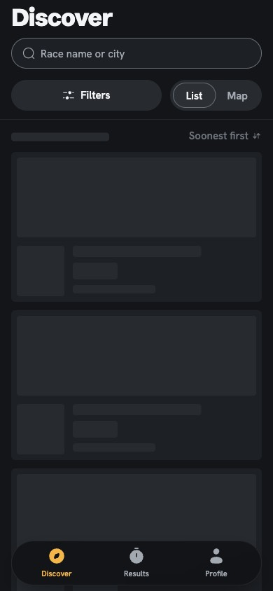
race-browse-loading · after
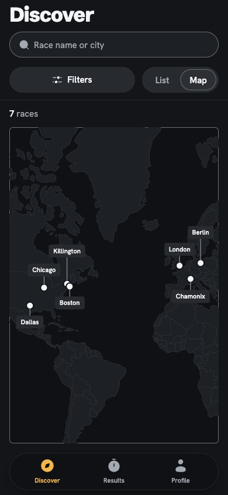
race-browse-map · beforerace-browse-map · after
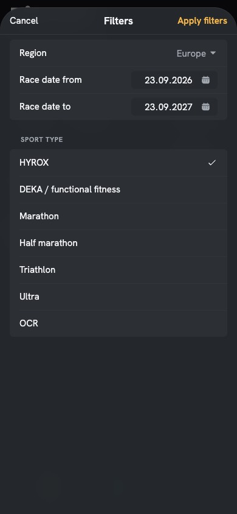
race-browse-sheet-filtered · before
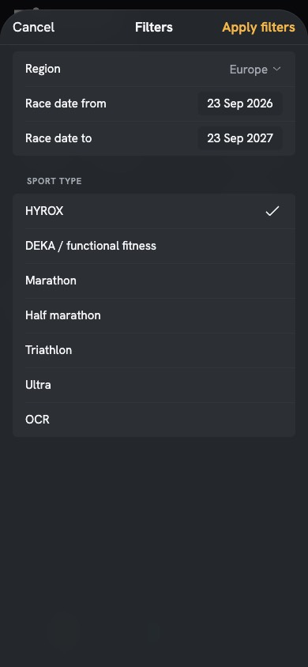
race-browse-sheet-filtered · after
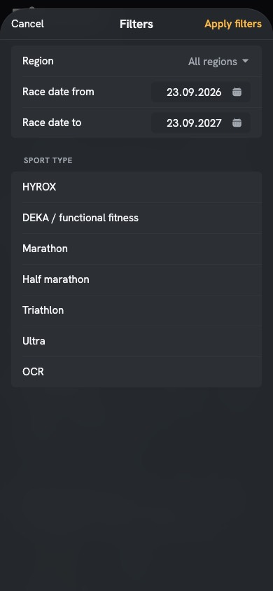
race-browse-sheet · before
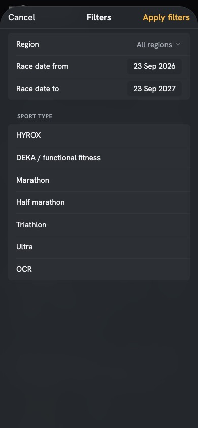
race-browse-sheet · afterrace-browse-zero · before
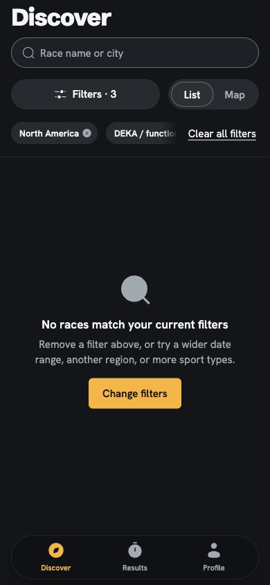
race-browse-zero · after
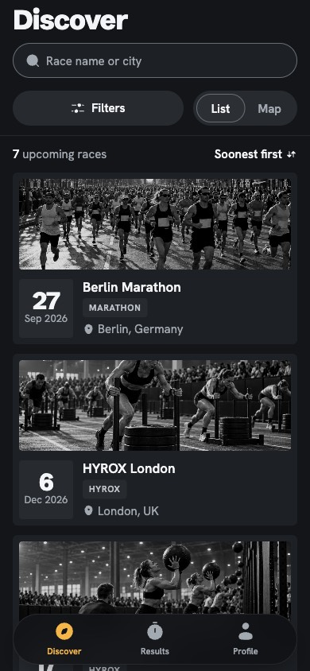
race-browse · beforerace-browse · after
Race detail
#2 back keeps Race browse; #23 Linear back chevron, 17px back label (#25); #24 the alert focus ring follows the corners; #25 17px alert button; #27 transparent bars at the scroll edge; #28 balanced caption; #29 "Tap Register again".
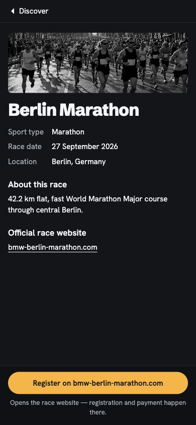
race-detail-berlin · before
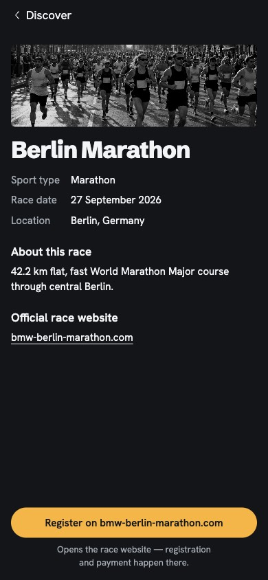
race-detail-berlin · after
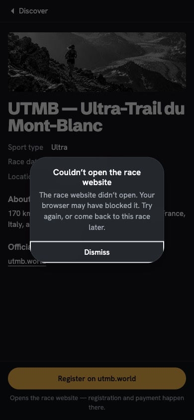
race-detail-error-reg-utmb · beforerace-detail-error-reg-utmb · afterrace-detail-error-reg · before
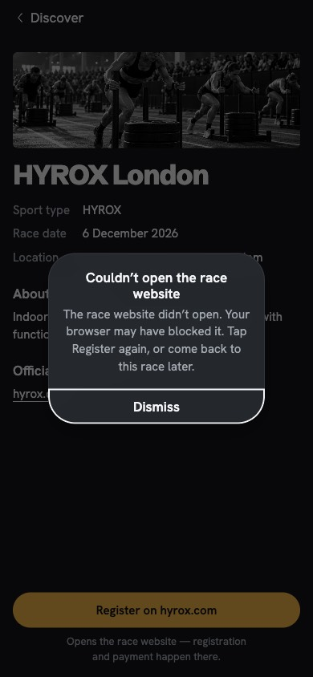
race-detail-error-reg · after
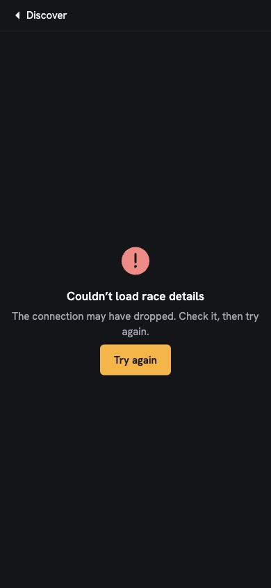
race-detail-error · beforerace-detail-error · after
#4 one ring per run of invalid rows; #8 the linked race on --bg-3 with a text Unlink; #9 one locked treatment, Cancel included; #26 date pill "Choose a date"; #33 sample data on the bare error pages; #34 Results receded above the sheet; #36 no catalog row while linked; #25 17px bar text.
#11 the finish time leads (56px), the race name steps down; #10 the link breaks only at / . - and Copy link; the alert body names Copy link; #27 transparent bars at the scroll edge; #24/#25 the alert.
#22 "Account"; #3 the bar action waits for the fields (Text disabled); #31 "Required"; #30 left-aligned notes and links; #32 the shorter sign-up error; #9 the locked form while signing in.
#1 no sheet over the top; #14–#19 current specimens (day spans, Cancel/Save, busy states, the search specimen gone, map error/loading, locked form, gate layout, the waiting bar action); #42/#43 current texts. Full page.